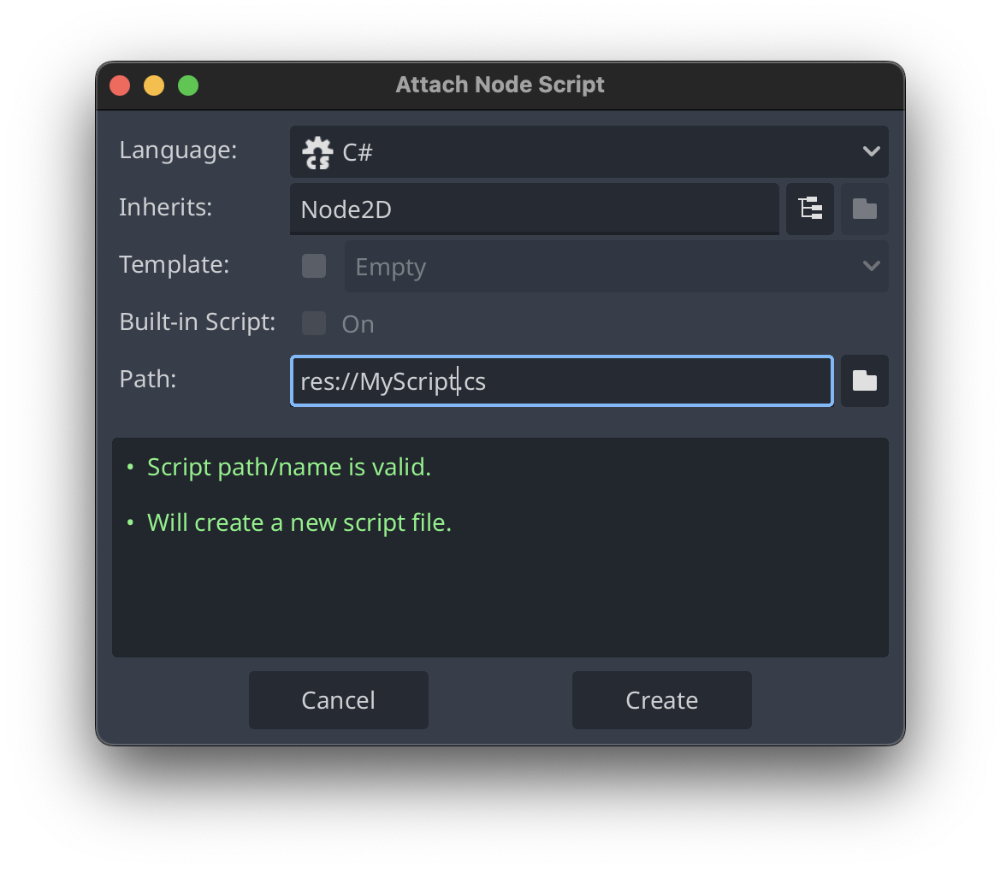
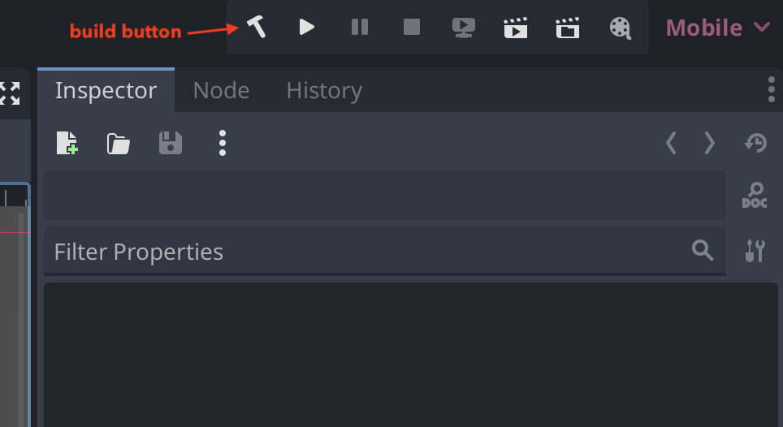

#️⃣ How C# Works in Godot
Understanding how C# is integrated into Godot can provide valuable context that makes it easier to design, understand, and debug games and applications built with Godot.
🖍️ The Basics
When you first add a C# script to a node, Godot makes a few modifications to your project to support C# development.

First, Godot edits the project.godot file to include a reference to the GodotSharp module.
Godot also creates a .NET solution file and C# project file alongside your project.godot file in your project's root directory. If your project is called MyGame, you will notice MyGame.sln and MyGame.csproj files. The solution is already configured to point to the C# project file.
At this point, you are free to add as many C# scripts and code files as you like, and they will automatically be picked up and compiled whenever you build the project by running dotnet build or clicking the build icon in Godot.

✏️ Namespaces
Godot does not care what namespaces you use (if any) in your code files, even for scene scripts. You are free to nest namespaces as much as you like (or not use them at all).
🖼️ How Godot Hosts Managed Assemblies
Godot is a native application written largely in C++. To run C# code, Godot leverages Microsoft's nethost and hostfxr libraries which allow native applications to load and execute .NET assemblies. For more background on this, check out Microsoft's guide aptly titled "Write a custom .NET host to control the .NET runtime from your native code"
🤝 Engine Interop
Godot uses custom C# source generators to generate the interop bindings between your managed C# code and the engine's native code. When you write a Godot node script class, you can actually see what Godot is generating by adding settings to your .csproj file which instruct .NET to emit the generated code to a directory. This is generally recommended and allows you to dig into generated code.
<Project Sdk="Godot.NET.Sdk/4.3.0">
<PropertyGroup>
<!-- To show generated files -->
<EmitCompilerGeneratedFiles>true</EmitCompilerGeneratedFiles>
<CompilerGeneratedFilesOutputPath>.generated</CompilerGeneratedFilesOutputPath>
<!-- ... -->
If you go looking to see where these source generators are included, you won't find them. Instead, they're implicitly included with Godot.NET.Sdk referenced at the top of your project's .csproj file:
Note that sdk's like Godot.NET.Sdk are just special nuget packages which declare MSBuild targets and properties, package references, etc. When your project is based off an sdk, it inherits the sdk's configuration.
🌏 Versioning
You can omit the version of the sdk from the <Project> tag and use a global.json file in your project root instead (which is how the Chickensoft projects are structured).
This makes it easy to automate package updates. Godot will sometimes try to add the version back after opening the editor, but you can simply discard those changes in source control.
Here's an example of a global.json file, taken from the Chickensoft GameDemo.
{
"msbuild-sdks": {
"Godot.NET.Sdk": "4.3.0"
},
"sdk": {
"rollForward": "major",
"version": "8.0.401"
}
}
🧩 Packages, Assemblies and External Code
Because C# Godot projects use a standard solution and project file, you can reference external packages and assemblies in your project the same way you would in a vanilla C# project.
NuGet is Microsoft's package manager and package ecosystem hosting platform. Hundreds of thousands of packages exist for C# and can be easily added to most projects. For more on NuGet's background, you can read Microsoft's overview of NuGet.
Historically, nuget was a standalone command-line tool and package hosting site. Over time, nuget command line tool functionality has mostly been integrated into the dotnet CLI tool. You will rarely, if ever, need to use the nuget command-line tool directly. Also worth mentioning is that the nuget command line tool only runs on Windows, whereas the dotnet CLI is cross-platform.
📦 External Code
Plain C# packages which target netstandard or a compatible target framework can be easily added to your project with dotnet add package <package-name> or by editing the .csproj file directly and running dotnet restore.
External nuget packages which use the Godot API and have the same (or compatible) GodotSharp version as your game's Godot.NET.Sdk can be added and referenced from your game's project in the same way.
You can also include source generator packages by including the additional tags needed for .NET to understand them as source generators. This allows you to benefit from powerful metaprogramming tools, like the ones Chickensoft provides.
<PackageReference Include="Chickensoft.Introspection.Generator" Version="2.0.0" PrivateAssets="all" OutputItemType="analyzer" />
🚀 Script Assets and Code Files
When creating a C# Godot project, it's helpful to devise terminology that allows us to classify the C# code in a game into two potential "categories":
- C# script assets (scripts added to a Godot scene or resource)
- C# code files (plain C# code files not referenced directly by the engine)
In general, a "script" is a code file which is referenced somewhere in the engine's other files (like Godot's .tscn scene files). When referenced from a scene or resource, the code file should be considered a script asset rather than just a loose C# file sitting somewhere in your project. Because Godot's references can be brittle at times, it's important to rename and move files in your project from within the Godot editor to avoid breaking references.
On the other hand, plain C# code files you add to your project that aren't referenced in the engine should not be considered assets. This distinction becomes important when you wish to modularize your project.
🪆 Modularizing Your Game
If you've structured your code well, you can move C# code files (but not script files) out of your project and reference them as a separate package in your game's project. Doing so is completely optional, and should only be considered if build times are a major concern. To make a new module for your project, simply create a new C# class library project and move the relevant code files to it. Then, add a reference to it from your game's project and rebuild.
If your code files don't reference Godot at all, you can make a plain C# package with dotnet new classlib. More than likely, though, your code files will reference Godot engine API's. To enable this, you'll need to add GodotSharp as a dependency to your package (make sure to reference the same version of GodotSharp as the Godot.NET.Sdk your game is referencing in it's .csproj file).
For packages which reference GodotSharp, you'll almost certainly run into issues trying to run Godot code outside the engine with a test framework like XUnit, so you can leverage Chickensoft's GodotPackage template to spin up a new project that has a test Godot project already setup with GoDotTest.
👩💻 Development
Debugging Godot projects can be setup with VSCode, VSCodium, Rider, and Visual Studio, among others. Chickensoft projects and templates typically include launch profiles needed to work with VSCode.
Godot version management can be automated with GodotEnv, our open source Godot installation and addon manager. GodotEnv runs from the command line and automatically sets up the relevant environment variables, paths, and symlinks on macOS, Windows, and Linux, making it easy for multiple team members to develop a project, stay in sync with engine updates, and use the same launch profiles in the project.
To run tests on game code, it can be difficult to use packages like XUnit or NUnit since Godot is a native application which manages the .NET runtime.
Chickensoft generally recommends a keep-it-simple approach by using GoDotTest to execute tests from within the Godot game itself and having a preprocessor hook in development builds which runs the tests if it sees the right command-line flags. We automatically include this boilerplate out-of-the-box in the Chickensoft templates. GoDotTest executes tests synchronously and in-order. Tests have access to the test scene and are easily debugged. Additionally, it is compatible with code coverage and abides by GodotEnv's Godot installation path conventions.
🕰️ The Future
As C# continues to mature and expand its horizons, we are seeing more support for ahead-of-time compilation in each new release of .NET. This is likely due to limited support for runtime code generation on platforms like iOS, which do not permit just-in time compilation as is typical on other platforms (like Android).
In general, we recommend avoiding most reflection, as most will not work well in ahead-of-time compilation scenarios. Instead, we favor compile-time code generation.
Many of the chickensoft packages are built on top of the Chickensoft Introspection generator. The introspection generator is a compile-time metaprogramming tool that generates information about the types in a project. You probably won't want to use it directly unless you're building tooling, as you can just leverage the Chickensoft packages which make use of it on your behalf.
The Chickensoft introspection generator also produces a type registry for the project it's added to, allowing types to be looked up and filtered in various fashions. For example, the data generated by this tool enables convenient serialization of hierarchical state machines in Chickensoft's LogicBlocks package, as well as simple, ergonomic serialization for general-purpose, versioned models in Chickensoft's Serialization package. Our simple dependency injection tool and script utilities system, AutoInject, also makes use of the generated introspection data to automatically connect nodes to script properties without resorting to reflection.
While generated metadata can be clunky and sometimes opaque, we still prefer it over reflection to support platforms like iOS and future-proof our projects as .NET continues to evolve. Finally, a new approach to the C# integration is being developed for Godot based on GDExtension, which will require C# scripts to be ready for ahead-of-time compilation.
In general, Godot and C# is an excellent choice today and is already powering a number of existing and upcoming games.